Onboarding
Given the video frames and corresponding object masks, we run a classical 3D reconstruction pipeline comprising SfM, Multi-View Stereo (MVS), and 3DGS training to produce a 3D mesh and an optimized 3DGS object representation.
6D OBJECT POSE · 3D GAUSSIAN SPLATTING
National Technical University of Athens
WACV 2027
6D pose estimation of novel objects without CAD models remains an open challenge: model-free methods must build the object representation from scratch during onboarding and have long trailed their model-based counterparts. We present NovaSplat, a model-free pipeline that closes this gap.
From a short smartphone video captured at onboarding, we train a 3D Gaussian Splatting (3DGS) model that serves both as a template source for detection and coarse pose estimation and as a differentiable backbone for pose refinement. Our refiner optimizes the object-to-camera pose with combined photometric and geometric losses under a continuous rotation parametrization free of gradient singularities.
On HOPEv2, NovaSplat surpasses all evaluated model-based methods on overall AP and APMSSD. On IndustryShapes, it outperforms the evaluated model-free competitors while narrowing the gap to model-based methods. NovaSplat-Lite delivers a 3.1× inference speed-up at a cost of only 0.001 AP on HOPEv2.
Our pipeline consists of two stages: onboarding and inference.
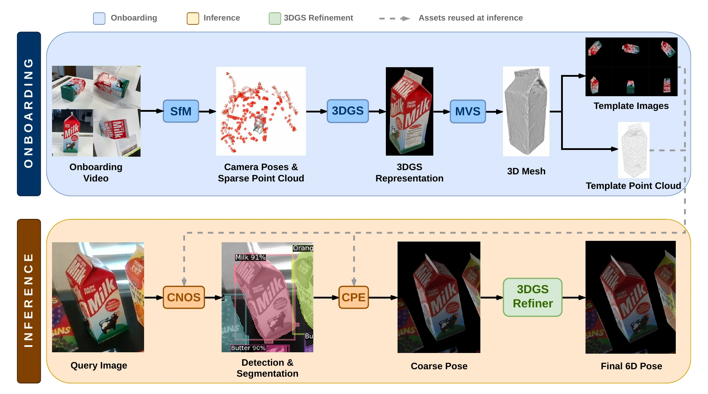
Given the video frames and corresponding object masks, we run a classical 3D reconstruction pipeline comprising SfM, Multi-View Stereo (MVS), and 3DGS training to produce a 3D mesh and an optimized 3DGS object representation.
Matching visual and geometric descriptors yields a set of 3D-3D correspondences, which are passed to a RANSAC framework to produce the coarse pose.
Starting from the coarse estimate, our 3DGS-based refiner optimizes the object-to-camera pose by jointly minimizing photometric and geometric losses.
The coarse pose is refined by jointly optimizing photometric and geometric alignment, using the differentiable 3DGS representation learned during onboarding.
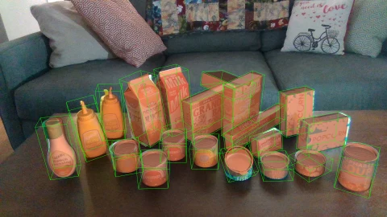
RefinedCoarseResults reported in the paper on household and industrial object benchmarks. Higher scores are better.
NovaSplat achieves the highest overall AP and APMSSD among the evaluated methods.
| Method | CAD | AP ↑ | APMSSD ↑ | APMSPD ↑ |
|---|---|---|---|---|
| GigaPose | Yes | 0.167 | 0.046 | 0.288 |
| OPFormer* | Yes | 0.351 | 0.272 | 0.431 |
| GenFlow | Yes | 0.411 | 0.346 | 0.475 |
| Co-op (CNOS) | Yes | 0.477 | 0.405 | 0.549 |
| Co-op (MUSE) | Yes | 0.514 | 0.435 | 0.593 |
| NeMO | No | 0.302 | 0.291 | 0.312 |
| OPFormer* | No | 0.335 | 0.243 | 0.427 |
| GFreeDet2 | No | 0.452 | 0.365 | 0.538 |
| NovaSplat | No | 0.529 | 0.509 | 0.548 |
| NovaSplat-Lite | No | 0.528 | 0.509 | 0.547 |
* OPFormer results from the BOP leaderboard, as reported in the paper. CAD indicates use of a CAD model.
NovaSplat leads the evaluated model-free methods on both splits. Model-based methods retain an advantage on these textureless, specular industrial parts.
| Method | CAD | Classic AR ↑ | Extended AR ↑ |
|---|---|---|---|
| FreeZe | Yes | 0.64 | 0.61 |
| FoundPose | Yes | 0.30 | 0.28 |
| FoundationPose | Yes | 0.67 | 0.69 |
| OnePose | No | 0.07 | 0.02 |
| OnePose++ | No | 0.14 | 0.20 |
| FoundationPose | No | 0.25 | 0.33 |
| NovaSplat | No | 0.36 | 0.40 |
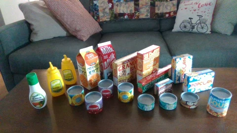
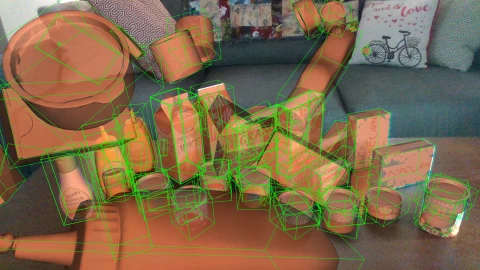
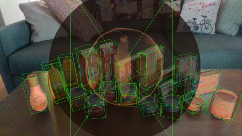
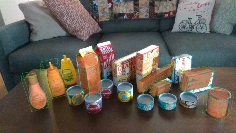
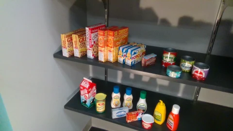
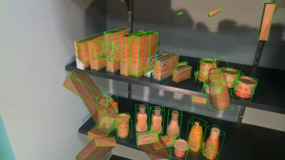
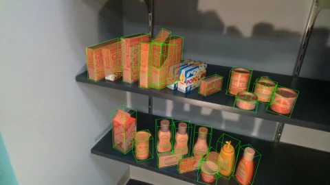
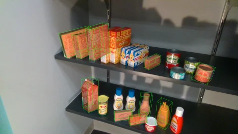
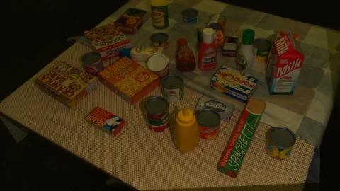
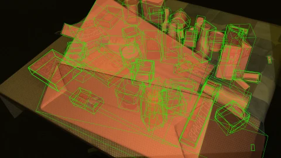
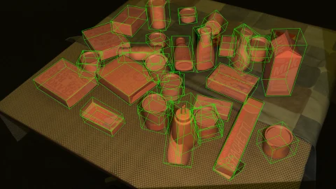
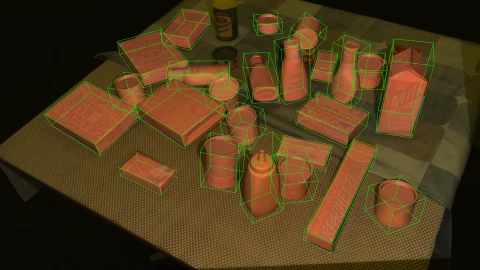
OriginalNovaSplat (Ours)GFreeDet2OPFormerNeMO@inproceedings{floros2027novasplat,
title = {NovaSplat: Model-Free 6D Object Pose Estimation via
3D Gaussian Splatting Onboarding and Refinement},
author = {Floros, Georgios and Sartinas, Evangelos and
Vaggelis, Orestis and Pateraki, Maria},
booktitle = {Proceedings of the IEEE/CVF Winter Conference on Applications of Computer Vision (WACV)},
year = {2027},
url = {https://arxiv.org/abs/2610.13309}
}